Manual de Usuario
El Manual de Usuario para línea de comandos esta
disponible aquí
Si tiene algún problema con DeepSkyStacker, infórmelo a la lista
de correo de DeepSkyStacker alojada en groups.io:
https://groups.io/g/DeepSkyStacker
Introducción
Inicio
Rápido
Pestaña de
Registrado y Apilado
Apilado por Lotes
Pestaña Procesamiento
Crear una Máscara de Estrellas
La Lista de Imágenes
Previsualizar Imagen (Edición de Estrellas y Cometas)
Ajustes RAW y FITS DDP
Introducción
El propósito de este breve manual es explicar las
características y fundamentos del DeepSkyStacker..
|
La interface de usuario del DeepSkyStacker es bastante
simple e intuitiva y todas las características principales y comandos
están disponibles a mano.
La interface de usuario está
dividida en dos áreas:
En la izquierda una serie de
pestañas nos dan acceso a todos los comandos y características.
A la derecha hay una pantalla que dependera de la
pestaña actual que es utilizada para configurar y ver.
Para cambiar la pestaña actual puede pinchar en
cualquier lado de la pestaña.
|
Si
Ud. es un principiante en la astrofotografía y se pregunta que son
los archivos de
imagen light, dark, flat y bias y cómo crearlos aquí tiene una breve
explicación. |
|
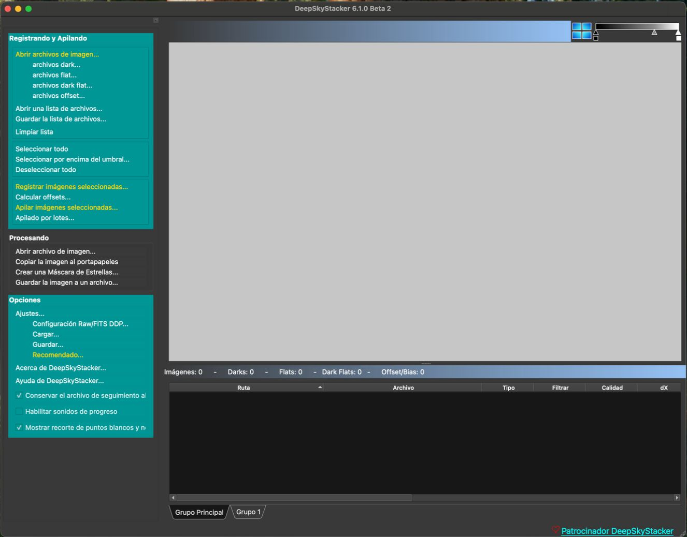 |
Inicio Rápido
Ud. acaba de terminar una noche ocupada y termino de
descargar todas sus imágenes (lights, darks, offsets y flats) a su PC.
El primer paso es agregar todas las
imágenes (de acuerdo a su tipo) a la lista.
Para hacer
esto utilice los comandos en el área de la izquierda:
-
agregar archivos de imagen
- agregar archivos dark
- agregar archivos flat
- agregar archivos
offset/bias
Posteriormente inicie el proceso de registrado, chequee la
opción "Apilar luego de registrar" despues de indicar el porcentaje de imágenes
que desea mantener para el proceso de apilado una vez realizado del proceso de
registración.
Si esta utilizando archivos raw (lo cual es altamente
recomendado), chequee los ajustes RAW DDP y comience el proceso de registrado.
Ahora puede irse a dormir sabiendo que pasada una buena
noche ud. podrá ver los resultados en la pestaña de procesamiento.
Tenga en cuenta que inclusive si su computadora se cuelga
despues del proceso de apilado, el resultado el guardado automáticamente en un
archivo especial: AutoSave.tif.
Pestaña de Registrado y Apilado
La
pestaña de Registrado y Apilado contiene todos los comandos y características
relativas a los procesos de registrado y apilado.
|
Desde esta pestaña, puede agregar imágenes de cada
tipo (light, dark, flat y offset/bias) a la lista, guardar y recuperar
Listas de Archivos, previsualizar imágenes e iniciar el proceso de
registrado y apilado.
|
Es
posible agregar archivos a la lista simplemente arrastrando y
soltándolos desde el explorador de archivos.
El
programa le preguntará el tipo de archivos antes de agregarlos a la
lista. |
El área derecha contiene la Lista de
Archivos y la Previsualización de Imágenes.
Debajo de la lista de imágenes
una línea de pestañas da acceso a cada grupo de archivos. Si Ud. pincha en
la pestaña de un grupo verá los archivos de dicho grupo.
Para conocer más sobre grupos de archivos puede
consultar los detalles técnicos aquí.
Para modificar el gamma de la imagen previsualizada
puede utilizar una barra desplazamiento ubicada en el borde superior
derecho la cual puede ser útil para ver objetos débiles.
Por supuesto no se hace ninguna modificación a la
imagen real y es solo un truco en la previsualización.
|
Es
posible iniciar automáticamente el proceso de apilado luego del
proceso de registrado indicando el porcentaje de archivos de imagen
light a mantener. Las mejores imágenes, basadas en el puntaje calculado por el proceso
de registrado, serán por lo tanto
apiladas. | |
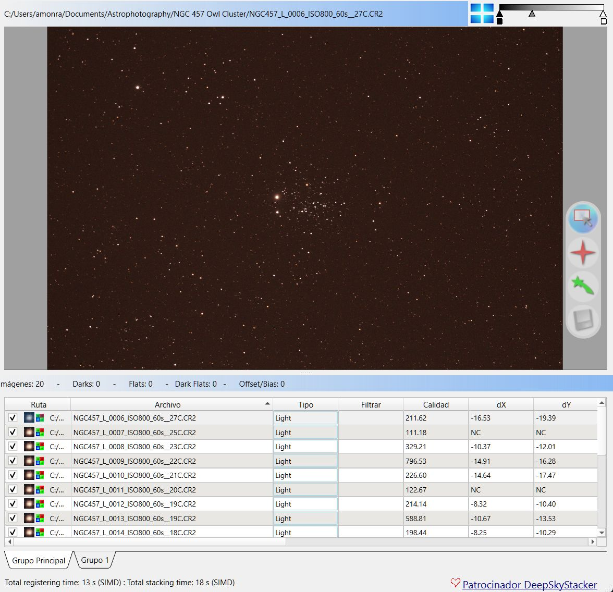 |
La característica de "Calcular
Offsets" puede ser utilizada para calcular los desplazamientos y ángulos de
rotación entre las imágenes sin comenzar el proceso de apilado. Una vez
calculadas las columnas de dX, dY y de ángulo de las imágenes la lista es
completada con los offsets y ángulos de rotación calculados.
Nota: no es necesario calcular
los offsets manualmente previo al proceso de apilado debido a que los offsets y
ángulos de rotación son de todos modos calculados automáticamente justo antes
del proceso de apilado..
La
opción "Seleccionar por encima del umbral..." puede ser utilizada para
seleccionar todas las imágenes cuyo puntaje es mayor o igual al valor de umbral
dado..
|
Antes de
comenzar el proceso de apilado una pantalla recapitula los diferentes
pasos.
Es importante saber
que los archivos de imagen light serán asociados automáticamente con
sus archivos
de imagen dark utilizando la velocidad ISO y el tiempo de
exposición.
En cada caso
los archivos de imagen
más similares serán propuestos y se mostrará una
advertencia si la velocidad ISO y/o el tiempo de exposición no
coinciden.
|
Es
posible forzar temporariamente la velocidad ISO y el tiempo de
exposición utilizando el menu contextual de los
archivos. |
Desde esta ventana se puede cambiar el método de
apilado para cada tipo de imagen pinchando directamente en el vínculo o en
el botón de "Parámetros de Apilado". |
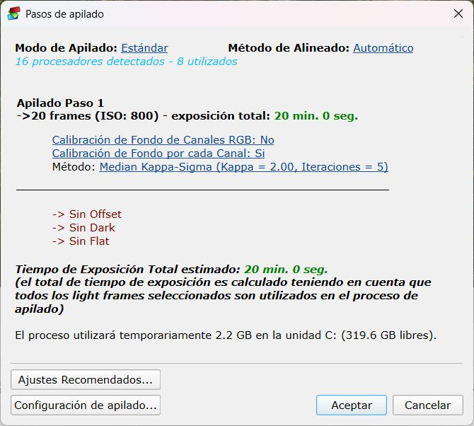
|
|
Luego se abre una nueva ventana, desde la cual se
puede modificar la carpeta en la cual son creados los archivos temporales
necesarios para el proceso de apilado y todos los ajustes que controlan el
proceso de apilado.
La primera pestaña es utilizada para indicar el modo
de apilado entre los cuales esta la posibilidad de utilizar el Rectangulo a Medida.
Debería notar que en todos
los modos se calculan los offsets a partir del archivo de imagen
de referencia, por lo tanto no es un verdadero
mosaico sino un pseudo mosaico.
Aquí es también donde puede elegir la opción Drizzle para el apilado.
|
La opción drizzle crea
imágenes entre 4 y 9 veces más grandes.
Para las ya grandes
imágenes de DSLR se pueden crear imágenes aún muy grandes y
DeepSkyStacker puede necesitar muchísima memoria y espacio en
disco para procesarlas. |
|
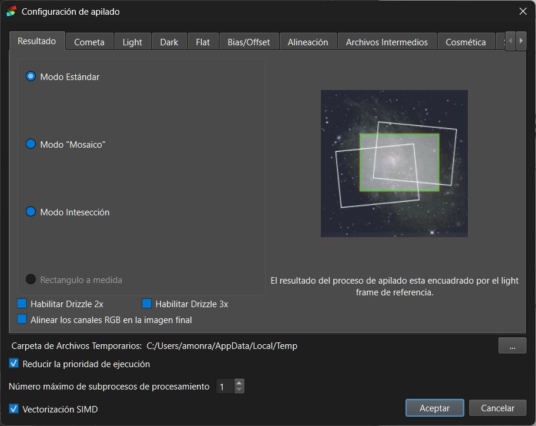
|
|
Las otras pestañas de light, dark, flat y bias son
utilizadas para modificar el método
de apilado para cada tipo archivo de imagen, y para activar la opción
de calibración de
fondo para los archivos de imagen light o la deteccion y remoción de hot
pixels y la detección y remoción de
columnas defectuosas de los archivos de imagen dark.
Si todos tus fotogramas de luz son archivos FITS y
contienen datos válidos del Sistema de Coordenadas Mundiales (WCS) en los
encabezados de los archivos FITS, la casilla «Usar datos WCS de FITS»
determina si se utilizan esos datos para calcular los desplazamientos y la
rotación de la imagen con respecto al marco de referencia.
Si está marcada, los desplazamientos y la rotación de
la imagen con respecto al fotograma de referencia se derivarán de los
datos WCS, lo cual es muy rápido; en cambio, si no está marcada, los
desplazamientos y la rotación se calcularán comparando la ubicación de las
estrellas en el fotograma de referencia y la imagen actual, lo cual es
mucho más lento. |
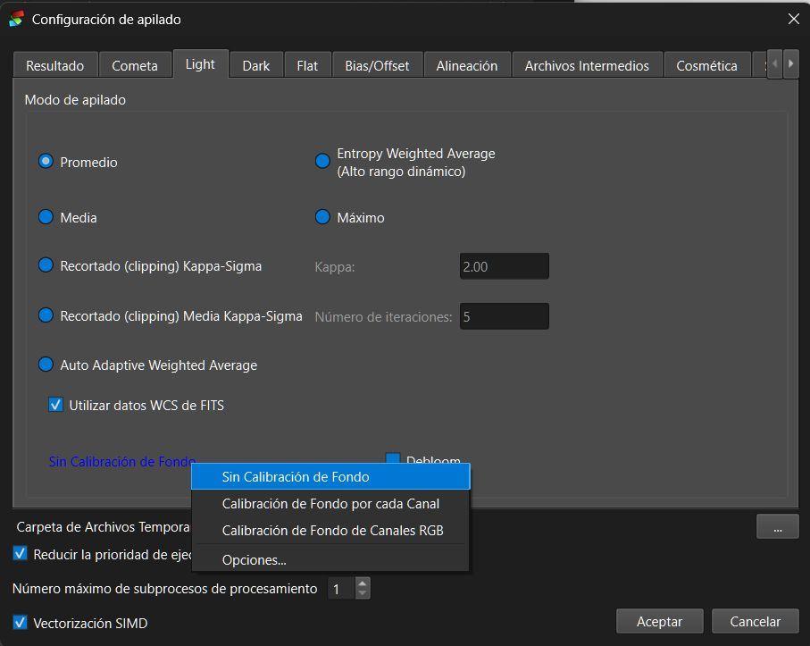
|
|
La
pestaña de Alineado puede utilizarse para cambiar el método de alineado
para procesar los archivos de imagen light.
Se puede elegir transformación Bilinear, Bicuadrada o
Bicúbica o dejar que DeepSkyStacker seleccione la mejor transformación
basada en el número de estrellas disponbiles.
|
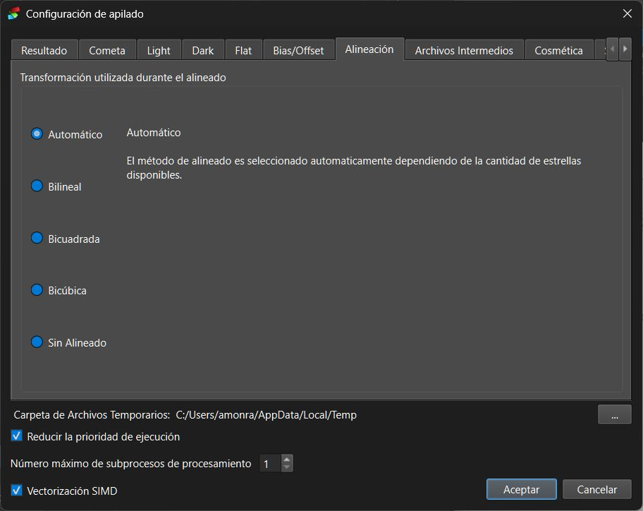
|
|
Esta pestaña es utilizada para controlar la creación
de archivos intermedios.
Se pueden utilizar dos opciones para crear archivos
que contengan imágenes intermedias:
La primera opción puede utilizarse para crear un
archivo que contenga la imagen calibrada para cada archivo de imagen
light.
La segunda opción
puede utilizarse para crear un archivo que contenga la imagen calibrada y
registrada para cada archivo de imagen light.
Los archivos creados tienen
el nombre y ubicación del archivo de imagen light coincidente con la
extensión .cal.tif or .cal.fts para la imagen calibrada y la extensión
.reg.tif or .reg.fts para las imágenes registradas y calibradas.
Los archivos son siempre
TIFF o FITS sin compresión, monocromáticos o color, 8, 16 o 32 bit
dependiendo de la profundidad en bits del archivo de imagen light.
|
Cuando seleccione una de estas opciones
asegurese tener suficiente espacio libre en el disco para alojar
todos los archivos
creados. | |
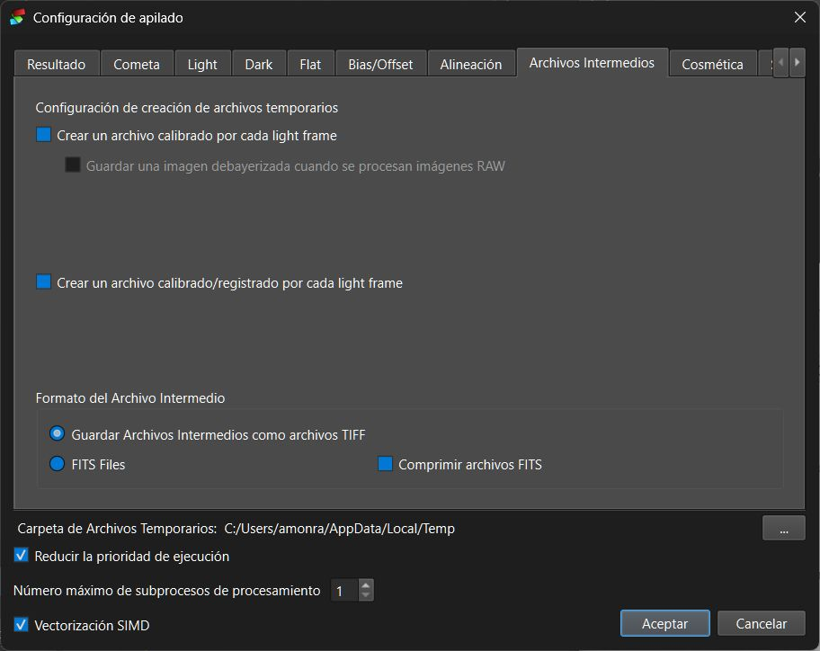 |
|
Esta
pestaña es para controlar la forma en que las imágenes calibradas son
limpiadas antes de apilarlas.
El objetivo es detectar y limpiar hot y cold pixels
sobrantes luego de la calibración.
Seleccionar estas opciones puede alterar seriamente
la imagen resultante por lo tanto utilicela con precaución.
Para definir el comportamiento de la limpieza
cosmética se necesitan dos parámetros.
El primer parámetro es el tamaño del filtro utilizado
para detectar y corregir los hot/cold pixels. Cuanto más largo es el
filtro, más tiempo de procesamiento será necesario y más suave resultará
la imagen resultante.
El segundo parámetro es el umbral debajo del cual no
se realizará ninguna corrección (el valor del pixel permanece
inalterado).
Un umbral mas bajo significa que se
realizaran mas correcciones.
La última opción puede ser seleccionada para crear
una imagen que nos muestre los pixeles corregidos para cada archivo de
imagen light.
En esta imagen, los hot pixels
limpiados son blancos, los cold pixels limpiados son grises y todos los
demas pixels son gris claro..
Los archivos creados
tienen el nombre y ubicacion del archivo de imagen light correspondiente
con extension .cosmetic.tif o .cosmetic.fts tal como se definió en la
pestaña anterior.
|
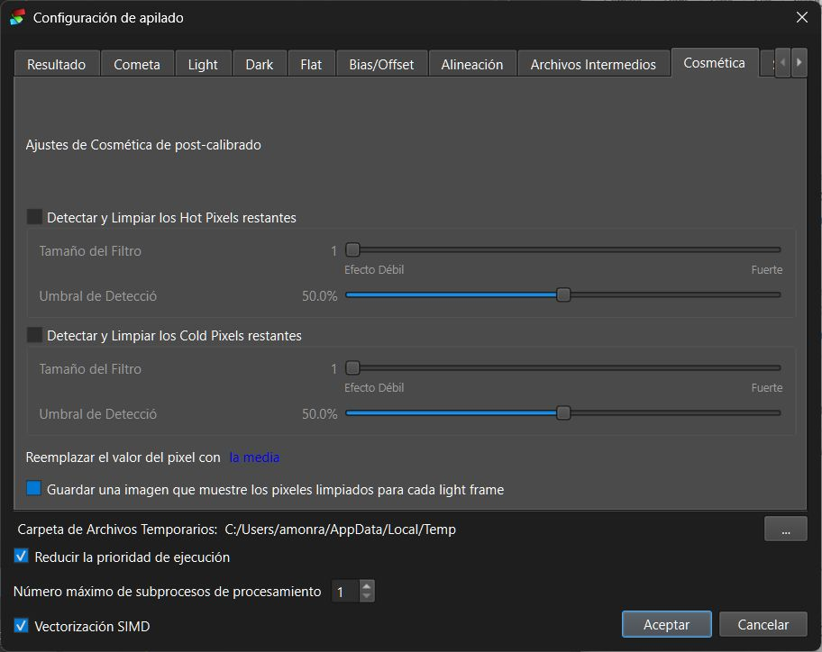 |
|
La pestaña
Cometa esta disponible sólo cuando al menos dos archivo de imagen light
(incluyendo el archivo
de imagen light de referencia) tienen un cometa
registrado.
En este caso la pestaña Cometa es utilizada para
seleccionar el modo de apilado de cometa de los 3 modos disponibles.
Lea el tema Apilado de Cometas en los
Detalles Técnicos para información sobre cómo utilizar el Apilado de
Cometas. |
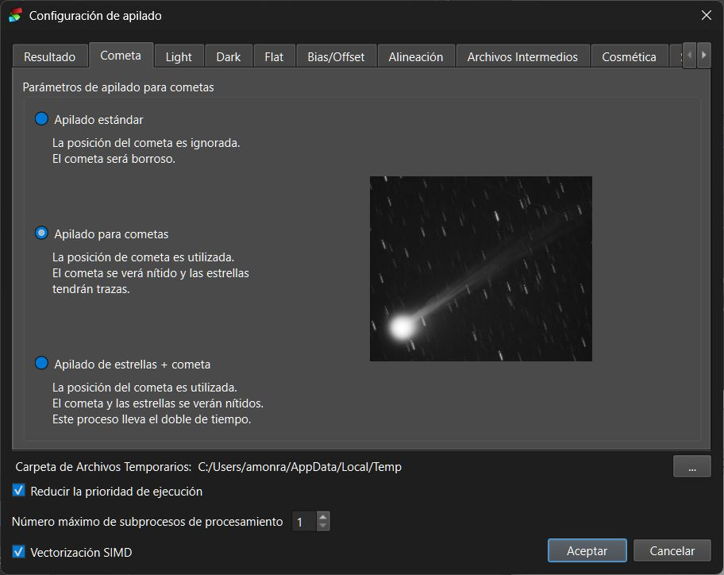 |
Luego del proceso de apilado, la imagen resultante es
guardada en el archivo AutoSave.tif file el cual es creado en la carpeta del
archivo de imagen light de referencia.
Apilado por Lotes
La
ventana de Apilado por Lotes es utilizada para crear imágenes resultantes de más
de un apilado.
|
Puede ser utilizada por ejemplo para crear imágenes
resultantes de imágenes de luminancia en rojo, verde y azul sin la
necesidad de cargar cada lista e iniciar manualmente el proceso de apilado
cada una de ellas.
Por
supuesto tambien puede ser utilizado para apilar cualquier lista
existente.
Solo necesita
agregar las listas de archivos previamente creadas con el comando Guardar
Lista de Archivos a la lista.
Cada Lista de
Archivos que sea seleccionada será procesada.
Al finalizar el proceso de apilado, los nombres de
archivo de salida son reemplazados por el nombre de la lista para cada
lista procesada.
Notas:
|
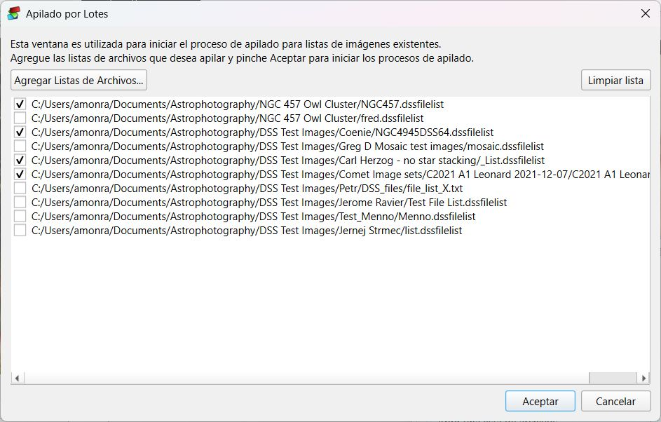 |
Pestaña Procesamiento
La pestaña de procesamiento contiene los comandos y
características pertinentes al post procesamiento.
|
Me
gustaría recalcar que DeepSkyStacker solo permite un ajuste sencillo de
estiramiento y balance de color de la imagen para visualizar el resultado
del proceso de apilamiento. Sin
embargo, si no hay un gradiente de fondo, es posible obtener un resultado
bastante aceptable utilizando únicamente las herramientas que se
proporcionan aquí.
Cualquier
procesamiento posterior complejo debe realizarse con otro software
diseñado específicamente para esa
tarea.
La
pestaña de procesamiento contiene una vista previa del histograma RVA, una
pestaña que permite aplicar un estiramiento de imagen de función de
transferencia de tono medio (MTF), una pestaña que permite aplicar un
estiramiento de imagen de tamaño hiperbólico inverso (ASinH) y otra
pestaña que permite ajustar el balance de
color.
Si
desea ajustar el balance de color, primero debe ajustar los parámetros de
estiramiento y aplicarlo, luego ir a la pestaña de balance de color,
realizar los ajustes y aplicarlos.
|
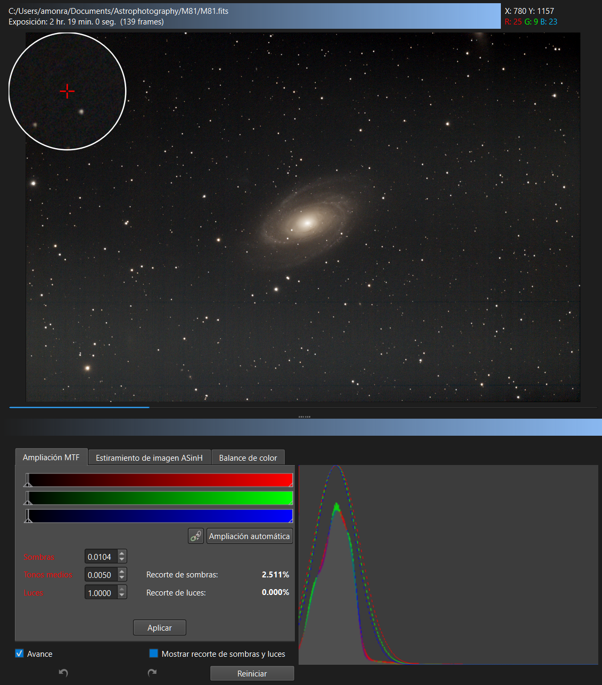 |
|
La transformación de la función de transferencia de
tonos medios o el estiramiento
La transformación MTF (o «Stretch») es una de las
herramientas de estiramiento de imágenes más potentes que
existen.
La herramienta se presenta en forma de tres controles
deslizantes para cada color primario, que se pueden mover para transformar
la imagen. Si el botón «vincular» (a la izquierda del botón
Estirar automáticamente) está en «vinculado», los controles deslizantes de
los tres colores están vinculados entre sí; en cambio, si está en
«desvinculado», los controles deslizantes de cada color son
independientes.
El control deslizante de la izquierda se aplica a la
señal de sombras, el del centro ajusta el equilibrio de los tonos medios y
el de la derecha ajusta las luces. Los valores de estos controles deslizantes
se muestran debajo de los controles, en la parte izquierda de la pestaña,
como cuadros de selección vinculados a la configuración de los
controles. Puede editar directamente los valores en los
cuadros de selección, o utilizar las teclas Re Pág y Av Pág para cambios
generales, o las teclas de cursor arriba y abajo para cambios más
precisos.
Si los controles deslizantes están vinculados, el
texto situado a la izquierda de los campos de selección se muestra en el
color «texto» habitual. Si no están vinculados, el color del texto
coincide con el color principal para el que hay ajustes activos en ese
momento.
A la derecha de los campos de selección se muestra el
porcentaje de píxeles recortados por la transformación, ya que lo ideal es
minimizar la cantidad de recorte generada por la
transformación.
El control deslizante de sombras (izquierdo)
establece el punto de recorte negro, lo que permite oscurecer el fondo de
la imagen recortando el extremo izquierdo del histograma, eliminando así
el ruido del sensor y estableciendo un punto negro verdadero.
Arrastrar este control deslizante ligeramente hacia la derecha o utilizar
el cuadro giratorio de Sombras para aumentar el ajuste oscurecerá el fondo
de la imagen. No se exceda con esto, ya que de lo contrario
podría perder detalles de nebulosidades tenues o de las
sombras.
El control deslizante de equilibrio de tonos medios
controla la función MTF, que asigna los valores de píxeles de entrada x
(entre 0 y 1) a los valores de salida y. Se expresa matemáticamente de la
siguiente manera:
(m - 1)x
y = -------------
(2m - 1)x - m
donde m es el valor del control deslizante de
equilibrio de tonos medios.
-
m = 0.5: Deja los tonos medios de la imagen
sin cambios (función identidad).
-
m < 0.5: Aclara los tonos medios
(desplaza la curva hacia la izquierda).
-
m > 0.5: Oscurece los tonos medios
(desplaza la curva hacia la derecha).
El control deslizante de la derecha o el cuadro de
selección de «Tonos altos» establece el punto blanco.
Además de los ajustes manuales descritos
anteriormente, hay un botón «Autostretch». Su comportamiento varía
ligeramente en función del botón «Vincular» (situado justo a la izquierda
del botón «Autostretch»). Cuando «linked» es verdadero, las
estadísticas de la imagen utilizadas para calcular los parámetros de
estiramiento que se aplicarán se calculan como una media de los tres
canales, lo que da como resultado la conservación del equilibrio de color
existente.
Cuando «linked» es falso, las estadísticas se
calculan por canal, lo que significa que los canales de color se estiran
de forma independiente, lo que da como resultado una neutralización
implícita del fondo que tiende a eliminar los dominantes de
color.
Por último, es posible ajustar los parámetros
utilizados para calcular el autoajuste haciendo clic con el botón derecho
del ratón sobre el botón «Autoajuste». Estos parámetros controlan el nivel
de no linealidad aplicado por el proceso de autoajuste.
El parámetro «Target Background» define el brillo
medio del fondo del cielo tras el estiramiento. El rango teórico es
[0,0; 1,0], con un valor predeterminado de 0,125. Probablemente se
establecería un valor entre 0,125 y 0,25 para obtener un resultado
aceptable.
El parámetro «Recorte de sombras» controla cuánto por
debajo de la mediana debe establecerse el punto negro. El valor se expresa
en unidades de desviación absoluta mediana (MAD), que es una medida
estadística robusta de la variabilidad de los datos. A diferencia de la
desviación estándar, que es muy sensible a los valores extremos, la MAD
mide la distancia típica desde la mediana y es completamente resistente a
los valores atípicos.
Si la casilla
«Vista previa» está marcada (configuración predeterminada), al ajustar los
parámetros (ya sea editando directamente los campos de los cuadros
giratorios, o seleccionando el cuadro giratorio o el control deslizante y
utilizando las teclas Re Pág y Av Pág para cambios generales, o las teclas
de cursor arriba y abajo para ajustes más precisos), la imagen y el
histograma que se muestran cambiarán para reflejar los cambios en los
parámetros. Sin embargo, para aplicar realmente los cambios, es necesario
pulsar el botón «Aplicar». |
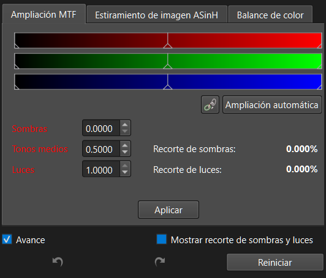 |
|
La transformación o
estiramiento ASinH
La
transformación ASinH amplifica las zonas más oscuras de la
imagen. Los
parámetros son el factor de estiramiento (o beta), el valor del punto
negro y si se utiliza o no la luminancia ponderada para el ojo
humano.
Para imágenes monocromáticas, los valores de
los píxeles se modifican mediante la siguiente función:
píxel
= (original - punto negro) × asinh(original × estiramiento)
---------------------------------------------------------
original
× asinh(estiramiento)
Para
imágenes en color, la función se convierte en:
píxel
= (original - punto negro) × asinh(rgb_original × estiramiento)
-------------------------------------------------------------
rgb_original × asinh(estiramiento)
El
factor de estiramiento (también conocido como beta) puede tomar valores
entre 0,0 y 1000,0. Valores
mayores resultan en un mayor grado de estiramiento de la
imagen.
El
valor del "punto negro" tiene un rango de [0,0000, 0,20000].
El
valor de 0,2 implica que el punto negro se establece en el 20 % del valor
ADU máximo posible. Los
valores inferiores al punto negro se consideran negros.
Dado
que rgb_original es el promedio de los tres canales de color, uno o dos
valores de canal serán mayores que rgb_original y, por lo tanto, podrían
recortarse. Para
mitigar este problema, se utiliza el algoritmo de mezcla RGB (desarrollado
por los autores de la herramienta GHSAstro para ajustar la ganancia
aplicada a los canales) para garantizar que no se produzca dicho
recorte.
Cuando
la opción de "luminancia ponderada para humanos" no está marcada,
rgb_original es el promedio de los tres valores de píxel;
cuando
está marcada, la ponderación cambia a 0,2126 para el valor rojo, 0,7152
para el valor verde y 0,0722 para el valor azul, lo que proporciona
resultados más cercanos al equilibrio de color de la percepción
humana.
Si
la casilla de verificación "Vista previa" está marcada (configuración
predeterminada), al ajustar los parámetros (editando directamente los
campos del cuadro de selección numérica o seleccionándolos y usando las
teclas Re Pág y Av Pág para ajustes generales, o las teclas de flecha
arriba y abajo para ajustes más precisos), la imagen y el histograma
mostrados se actualizarán para reflejar los cambios en los
parámetros. Sin
embargo, para aplicar los cambios, debe pulsar el botón
"Aplicar".
Tenga
en cuenta que el estiramiento es multiplicativo; por lo tanto, si aplica
un estiramiento de 200,0 y luego uno de 10,0, el estiramiento efectivo de
la imagen será de 2000,0. |
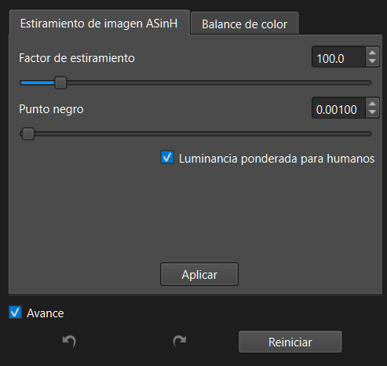 |
|
RVA Histograma
El histograma RVA permite
visualizar la distribución de los valores de píxeles para cada canal (R,
V, A) de la imagen.
Además,
se dibuja una curva gaussiana para cada canal sobre los datos del
histograma.
Puede
usar la pestaña Balance de color (ver más abajo) para ajustar el balance
de color de la imagen, lo que provocará que el histograma se vuelva a
dibujar. |
 |
|
Ajuste del
balance de color
La
pestaña Balance de color permite ajustar el balance de color de la
imagen. Debe
realizar este ajuste después de aplicar cualquier estiramiento de
imagen.
Si
la casilla de verificación Vista previa está marcada (configuración
predeterminada), al ajustar los parámetros (seleccionando el control
deslizante correspondiente y usando las teclas Re Pág y Av Pág para
ajustes generales, o las teclas de cursor para ajustes más precisos), la
imagen y el histograma mostrados se actualizarán para reflejar los cambios
en el balance de color. Sin
embargo, al igual que con el estiramiento de imagen, para aplicar los
cambios debe pulsar el botón Aplicar. |
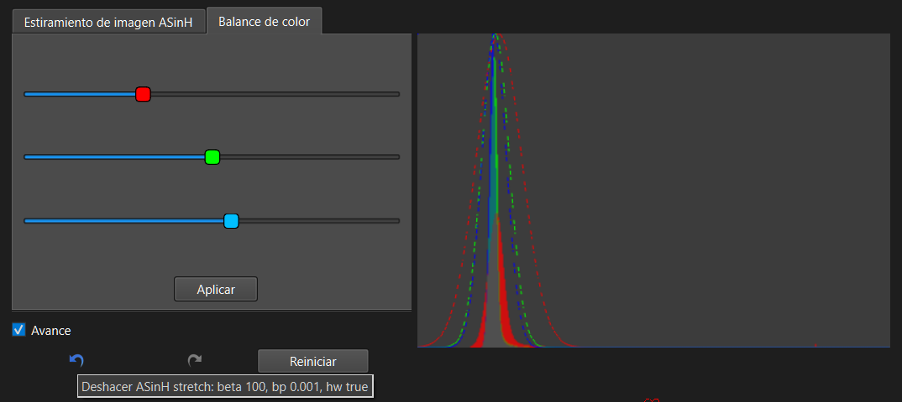 |
|
Ajuste de saturación
La pestaña «Saturación» permite
ajustar la saturación y la intensidad del color de la imagen. Normalmente,
es recomendable utilizarla después de aplicar un estiramiento MTF, ya que,
a diferencia del estiramiento ASinH, esta transformación tiende a
desaturar las imágenes en color.
El control deslizante
«Desplazamiento de saturación» controla la saturación general del color,
lo que permite reducirla ligeramente o aumentarla. El control
deslizante «Vibrancia» permite realzar de forma selectiva la intensidad de
los colores apagados y menos saturados de la imagen.
Si la casilla «Vista previa» está
marcada (configuración predeterminada), al ajustar los parámetros
(seleccionando el control deslizante adecuado y utilizando las teclas Re
Pág y Av Pág para cambios generales, o las teclas de cursor para ajustes
más precisos), la imagen y el histograma mostrados cambiarán para reflejar
los cambios realizados. Sin embargo, al igual que con el
estiramiento de la imagen, para aplicar realmente los cambios es necesario
pulsar el botón «Aplicar».
|
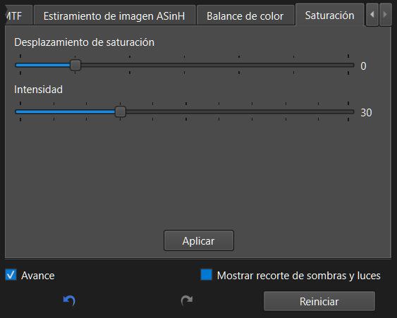 |
Deshacer/Rehacer ajustes de
parámetros
En
la parte inferior de cada pestaña encontrará los siguientes botones:
-
Para
aplicar las últimas modificaciones a la imagen
-
Para
deshacer las últimas modificaciones aplicadas
-
Para
rehacer las últimas modificaciones deshechas
-
Para
restablecer todos los valores
Carga de una
imagen
DeepSkyStacker
puede cargar imágenes TIFF (8, 16 y 32 bits; monocromáticas o RGB) o imágenes
FITS (8, 16, 32 y 64 bits; monocromáticas o RGB).
Al
finalizar el proceso de apilamiento, la imagen resultante se carga
automáticamente.
Guardando
la imagen resultante
|
DeepSkyStacker
puede guardar la imagen resultante como archivos TIFF o FITS de 16 o 32
bits mediante dos métodos:
-
Aplicar
ajustes: Guarda la imagen con los cambios realizados con el botón
"Aplicar". Se
recomienda usar esta opción si se planea realizar ajustes adicionales en
otro software.
-
No
aplicar ajustes: Guarda la imagen sin los cambios realizados con el
botón "Aplicar". Se
recomienda usar esta opción si se planea realizar todo el procesamiento
posterior en otro software.
|
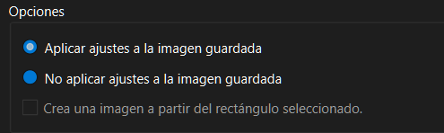 |
Para más
información sobre los mátodos de guardado puede leer las faq.
Crear una Máscara de Estrellas
El
uso de una Máscara de Estrellas es a menudo útil durante el post procesamiento
para utilizar técnicas de procesamiento para estrellas y para el resto de la
imagen.
La opción de Crear una Máscara de Estrellas
puede ser utilizada para crear una variedad de máscara de estrellas que puede
ser utilizadas luego con cualquier software que utilice para post procesar
(Photoshop, PixInsight, ...).
El DeepSkyStacker
solo crea archivos de máscaras de estrellas. No las utiliza de ninguna
manera.
Puede ser esta característica como una
herramienta destinada a proveer un archivo de máscara de estrellas en una forma
rápida y simple basada en la detección real de las estrellas.
|
¿Que es una máscara de
estrellas?
Una máscara de estrellas es una
imagen sintética en escala de gris en la cual cada estrella lo
suficientemente brillante es reemplazada por una región circular blanca la
cual se desvanece hacia el negro siguiendo una curva.
Ud. puede ver un ejemplo de
máscara de estrellas a la derecha.
Deslize el
cursor sobre el texto para ver la imagen o la máscara de
estrellas. |

Star
Field
|
|
Creación de la Máscara de
Estrellas
Para crear una máscara de estrellas
deberá cargar una imagen desde la pestaña de procesamiento.
Luego pinche en menu de la derecha Crear Máscara de
Estrellas...y una ventana se abrirá en la parte derecha de la
pantalla.
Desde allí podra cambiar la forma de las estrellas en
la máscara, el umbral de detección de estrellas y algunos otros
parámetros.
Una vez que terminó, pinche en el botón Aceptar y se
le solicitará seleccionar un archivo (tanto un archivo TIFF como FITS) en
el cual será guardada la máscara de estrellas.
El archivo guardado es siempre una imagen de 16 bits
en escala de gris. Esta no es automáticamente cargada por el
DeepSkyStacker.
La máscara de estrellas es creada siempre desde la
imagen tal como la ve en el DeepSkyStacker lo que significa con los
ajustes actuales aplicados. |
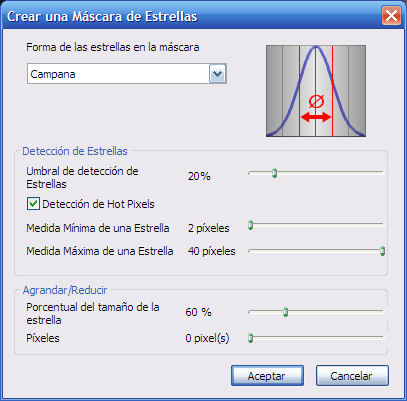 |
La Lista de Imágenes
La
lista de imágenes, comun a los procesos de Registrado y Apilado contiene todas
las imágenes utilizadas en los procesos de registrado y apilado.
- Archivos de Imagen Light
-
Archivos Dark
- Archivos Flat
-
Archivos bias/offsets
Sólo las
imágenes seleccionadas son utilizadas por los procesos de registrado y
apilado..
La lista contiene las
siguientes columnas:
| Checkbox |
Selecciona si la imagen sera
utilizada |
| Ruta |
Ruta al archivo de imagen |
| Archivo |
Nombre del archivo de imagen |
| Tipo |
Tipo de Imagen:
Light
Dark
Flat
Dark Flat
Bias |
| Puntaje |
Puntaje de la imagen calculado por el
proceso de registrado o
N/A para archivos dark,
flat y bias/offsets.
Cuando selecciona una imagen
como imagen de referencia utilizando el menu contextual, el
puntaje es precedido por un (*). |
| dX |
X offset (en pixeles) calculado para el proceso de
apilado |
| dY |
Y offset (en pixeles) calculado para el
proceso de apilado |
| Angulo |
Angulo de rotación (en °) calculado para el proceso
de apilado |
| Fecha/Hora |
Fecha y Hora del archivo |
| Tamaño |
Tamaño de la imagen en pixeles (Ancho x
Alto) |
| CFA |
Si la imagen es el resultado de un Color
Filter Array (CFA) que es el caso de todas las imágenes RAW que utilizan
una matriz Bayer. |
| Profundidad |
Tipo (escala de gris o RGB) y número de bits por
canal de la imagen |
| Infos |
Información adicional sobre la imagen (RAW
con informacion de la DSLR, TIFF u Otros) |
| ISO |
Velocidad ISO de la imagen |
| Exposición |
Tiempo de exposición de la
imagen |
| FWHM |
FWHM: Valor Maximo a Mitad del Ancho. (en pixeles)
Este es el valor promedio de todas las estrellas
detectadas |
| # Estrellas |
Número de estrellas detectadas.
Cuando se indica la posición de un cometa, al numero
de estrellas se le agrega un +(C) |
| Fondo del Cielo |
Valor de Fondo del Cielo para las imágenes
registradas en % |
Ud. podrá
ordenar la lista con cualquier columna pinchando el título de la columna (y
cambiar el sentido del ordenamiento pinchando nuevamente).
Ud. puede cambiar el orden de las
columnas y el ancho de cada una de ellas. Todo es guardado luego de cada uso del
DeepSkyStacker. El ancho de las columnas y su orden serán cargados la próxima
vez que se utilice el DeepSkyStacker.
Ud. puede previsualizar una imagen desde la lista
seleccionandola.
Si la imagen seleccionada es un archivo
RAW, se utilizarán los ajustes RAW DPP para decodificar el archivo RAW antes de
previsualizarlo.
|
Ud.
puede seleccionar múltiples archivos en la lista.
Hay disponible un menu
contextual (botón derecho del mouse) para seleccionar de la lista
manualmente la imagen de referencia, cambiar el tipo de archivo,
seleccionar o deseleccionar los archivos, remover los archivos de la
lista, editar las propiedades de los archivos, copiar el contenido de la
lista al portapapeles o eliminar definitivamente archivos del disco
rígido.
|
Si
selecciona una imagen de referencia que no esta seleccionada, los
offsets seran calculados a partir de esta imagen de referencia
aunque esta no sea
apilada. |
|
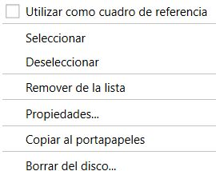
|
|
La ventana de propiedades puede ser utilizada para
cambiar el tipo de imagen, y temporariamente (solo para la sesión actual)
la velocidad ISO y tiempo de exposición de una o mas imágenes.
Cuando se cambia la
velocidad ISO y el tiempo de exposicion, el cambio no se realiza a los
archivos reales. Los valores son guardados solamente en memoria por la
duración de la sesión actual. |
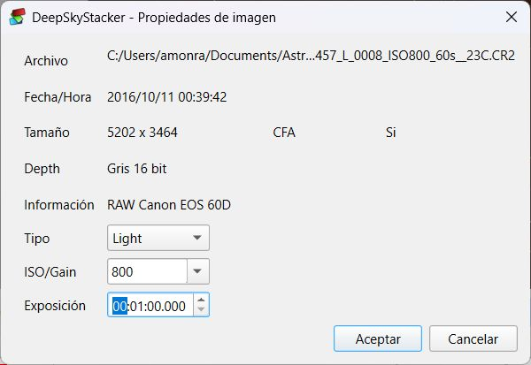 |
Previsualizar Imagen
La
previsualizacion de imagen es utilizada para ver rápidamente una imagen de la
lista de imágenes (pestañas de Registracion y Apilado) o para ver la imagen
siendo procesada (pestaña Procesamiento).
Ud. puede agrandarla y achicarla apuntando con el cursor y
moviendo la rueda del mouse. Esta es la única forma de hacer un desplazamiento y
zoom..
Edición de Estrellas y Cometas
|
Cuando se selecciona un archivo de imagen en la
pestaña de registración y apilado es posible:
-
editar las
posiciones de las estrellas: Las
estrellas detectadas por DeepSkyStacker serán coloreadas de verde. Tu
puedes seleccionar o deselecionar más
estrellas que las que detectó DeepSkyStacker
presionando el botón izquierdo del mouse.
-
editar la posición del cometa
-
crear y editar (mover/cambiar tamaño) un rectángulo a medida
Puede seleccionar uno de
los modos arriba descriptos en la barra de herramientas ubicada en la
esquina inferior derecha de la imagen.
El último item de la barra de herramientas es para
guardar los cambios.
|
Nota sobre
Edición de Cometas:
El centro del cometa
puede no ser detectado automáticamente por el DeepSkyStacker.
Para forzar el
cometa a una posición dada presione la tecla Shift mientras selecciona el centro del
cometa. |
|

|
|
Cuando se lo utiliza desde la pestaña de
procesamiento, la previsualización de imagen puede ser utilizada para
seleccionar una parte de la imagen dibujando un rectángulo directamente en
la imagen.
Este rectángulo es utilizado por un lado para aplicar
los ajustes solamente a este rectángulo, y por otro lado, opcionalmente,
para guardar solo una parte de la imagen.
Si no se define un rectángulo entonces los ajustes
son aplicados a la imagen completa.
En todos los casos, cuando la imagen es guardada al
disco los ajustes son guardados a la imagen completa.
|

|
Ajustes DDP
El
cuadro de diálogo de configuración de DDP permite acceder a todos los parámetros
utilizados durante el proceso de revelado de un archivo de imagen para
transformarlo en una imagen.
|
Image Adjustment (or
Colour Adjustment)
Los
parámetros son:
-
El
brillo general de la imagen, que se aplica al canal
verde.
-
El
brillo de los canales rojo y azul en relación con el canal
verde.
El
ajuste de imagen (o ajuste de color) se aplica después de que la imagen se
haya leído y escalado adecuadamente según su tipo (RAW, FITS o TIFF), y
después de aplicar todos los fotogramas de calibración.
Si
utiliza estos ajustes, al aumentar los valores más allá del valor
predeterminado de 1.0, se saturarán cada vez más
píxeles.
El
ajuste de brillo (o luminancia) se aplica por igual a los tres
canales. Los
valores de los factores de escala rojo y azul son relativos al canal verde, cuyo factor de escala es
el valor de brillo.
Si
desea escalar archivos TIFF o FITS de 12 bits a 16 bits, puede hacerlo
estableciendo un valor de brillo de
16.
Esto
también puede ser útil si desea ajustar el balance de canales para
archivos TIFF en formato FITS o CFA, según la documentación de su
cámara. |
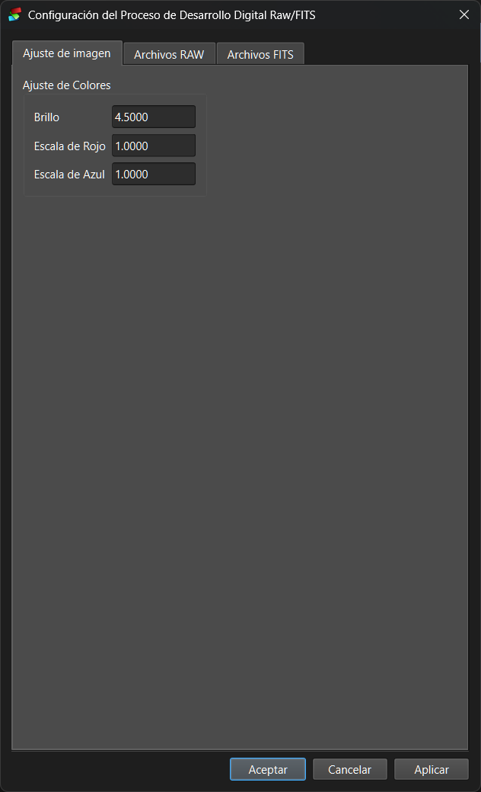 |
|
Archivos RAW
Los parámetros
son:
- balance de blanco
- modo de interpolación
Por defecto,
DeepSkyStacker usará el balance de blancos "luz de día", a menos que
sea seleccionado "Sin procesamiento de balance de blancos" o "Usar balance
de blancos de la cámara". Si se selecciona "Sin procesamiento de balance
de blancos", entonces no se realizará el escalamiento de balance de
blancos en absoluto, lo cual es deseable si se está utilizando software
como StarTools para procesar las imágenes apiladas.
En la mayoría de los demás casos, recomendamos
que se use Balance de blancos "Luz de día" (ninguna casilla de
verificación seleccionada).
Cámaras réflex digitales para astrofotografía de
fabricación original
En el
caso de cámaras especializadas como la Canon EOS 20Da / 60Da / Ra y la
Nikon D801A, debes configurar la cámara para que utilice el balance de
blancos «Luz diurna» y seleccionar «Usar balance de blancos de la cámara»
en DeepSkyStacker. Los coeficientes del balance de blancos
«Luz diurna» del archivo RAW garantizarán una reproducción correcta del
color en este caso.
Si se
selecciona «Usar balance de blancos de luz diurna» en una EOS 60Da (por
ejemplo), se producirá un marcado matiz rosáceo. El motivo es
que el archivo RAW indica que la cámara es una EOS 60D (y no una 60Da), lo
que significa que LibRaw utiliza los coeficientes de balance de blancos de
la EOS 60D, que no son los correctos para una EOS 60Da.
Cámaras réflex digitales
adaptadas para la astrofotografía (modificación
H-Alpha)
Probablemente deberías seleccionar «Usar balance de
blancos de luz diurna» para este tipo de cámara, aunque esto provocará un
claro matiz rosáceo que tendrás que eliminar en la fase de
posproducción. DSS no puede solucionar esto de forma
automática.
Balance de Blancos
Automático
La opción de elegir
"Usar balance de blancos automático" ya no es soportada porque da como
resultado que cada cuadro tuviera su propio balance blanco y estropeartía
el procesamiento de los cuadros oscuros y planos. Sin embargo, si
realmente desea usar el balance de blancos automático, configure su cámara
en Auto Balance de blancos y seleccione "Usar balance de blancos de la
cámara".
Los valores de
ajuste del balance de blancos se extraen de los archivos RAW por LibRaw
Copyright © 2008-2019 LibRaw LLC. LibRaw se basa en el Decodificador DCRaw
original para archivos RAW escritos por Dave Coffin.
Más información sobre el
modo de interpolación y el específico comportamiento de la optimización de
la matriz de Bayer, está disponible en los detalles técnicos .
|
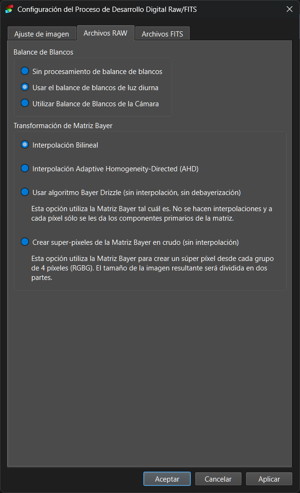 |
|
Archivos FITS
Si la casilla de
verificación "Los archivos FITS Monocromáticos de 16 bits son archivos RAW
..." no está seleccionada ,
DeepSkyStacker intentará utilizar la detección automática de la matriz CFA
basada en palabras clave FITS como BAYERPAT, COLORTYP y MOSAIC (para
cámaras en color Meade DSI). Si
el archivo FITS no contiene estas palabras clave o si se especifica un
patrón incorrecto en el archivo, puede seleccionar la casilla de
verificación y elegir la cámara / patrón que se utilizará como en
versiones anteriores de DeepSkyStacker.
El primer paso es
seleccionar de la lista la DSLR o cámara CCD utilizada para tomar las
imágenes. Esto es necesario para utilizar el Patrón de Filtro Bayer
correcto que será utilizado pra decodificar la imagen transformándola de
Blanco y Negro a color.
Los
ajustes controlan los valores utilizados
para:
más
información sobre el modo de interpolación y el comportamiento específico
de la optimización de la matriz Bayer en los
detalles técnicos
. |
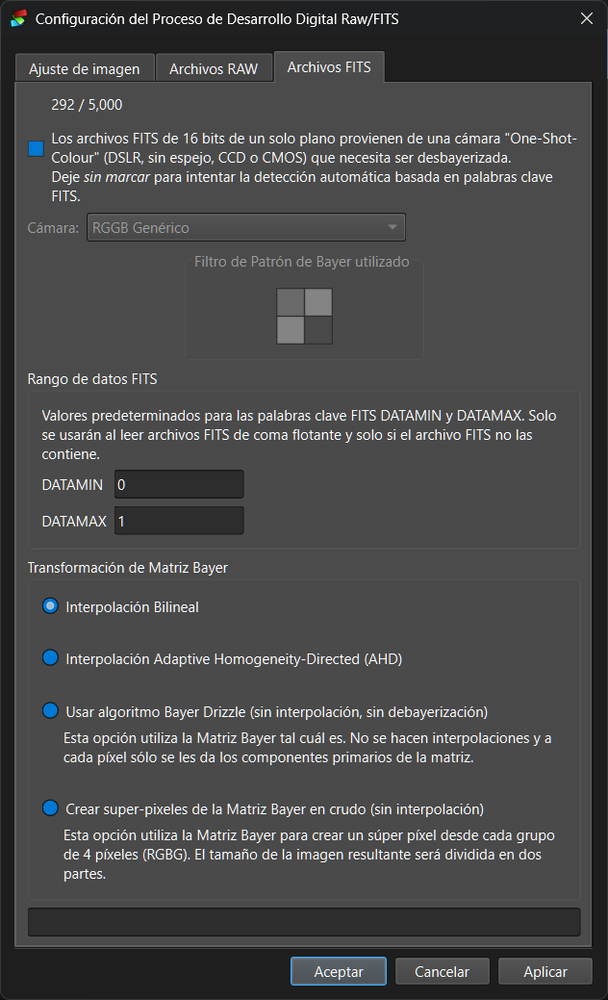 |